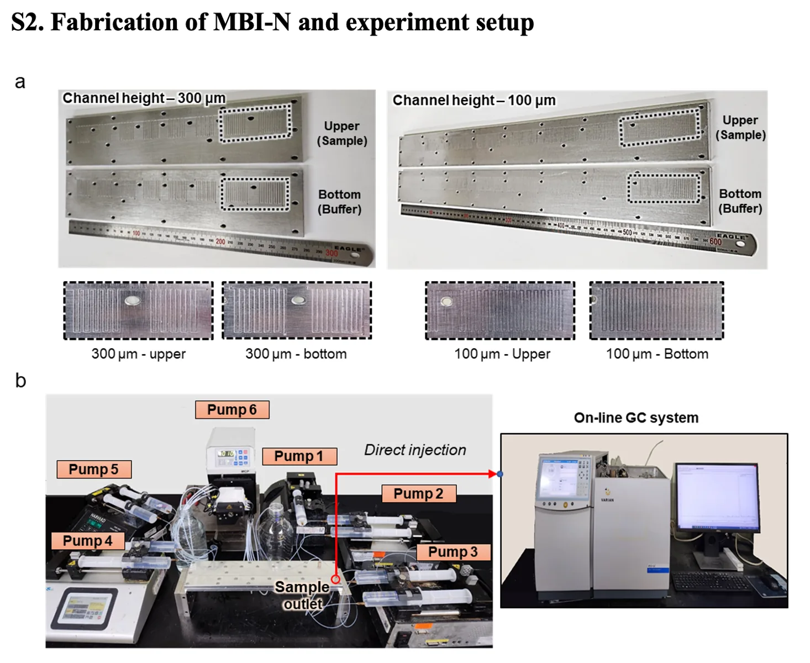
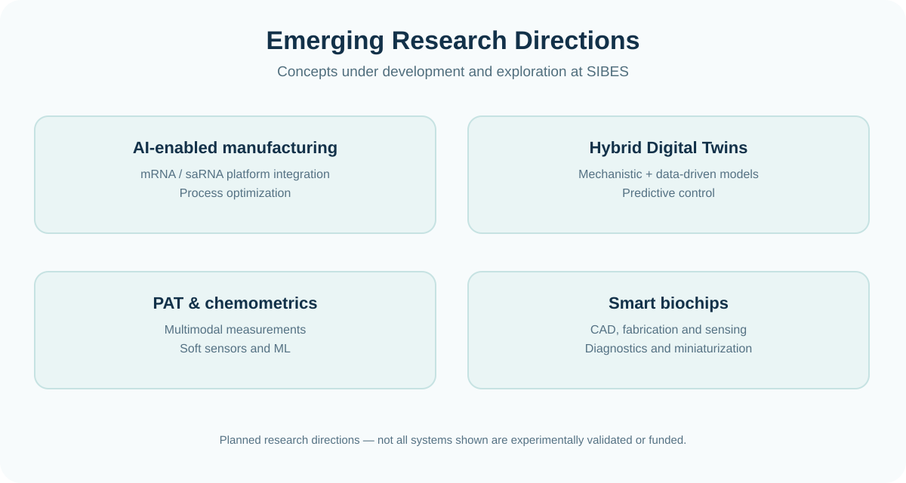
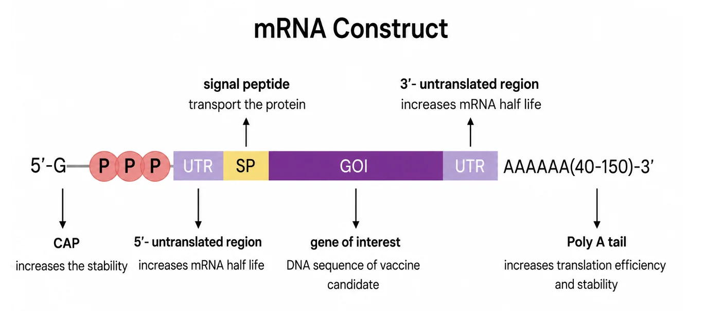
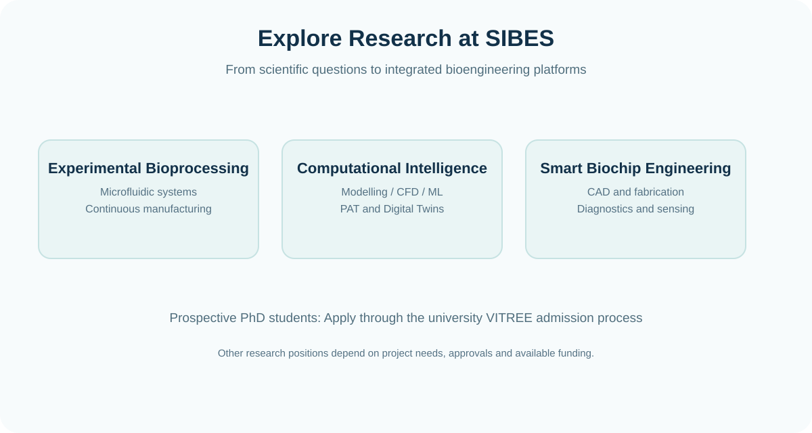

PUBLISHED · 2026
Integrated mRNA synthesis and purification
Demonstrated microfluidic IVT, enzymatic processing, separation, chromatography and concentration in an automated modular platform.
Explore further ↗Experimental achievements and new concepts are shown separately to preserve scientific accuracy.
Demonstrated microfluidic IVT, enzymatic processing, separation, chromatography and concentration in an automated modular platform.
Explore further ↗
Experimentally developed oscillatory-flow microreactors for intensified IVT and mRNA synthesis.
Explore further ↗
Camera-based interface monitoring combined with feedback-controlled continuous microfluidic enzyme separation.
Explore further ↗
Separation, flow dialysis, chromatography and modular purification research supporting integrated bioprocess systems.
Explore further ↗

Foundational reference figures can help frame future directions across nucleic-acid medicines without overstating experimental implementation.
The following are planned or exploratory directions. They are not claims of funded projects, completed systems or validated clinical products.

Integrating continuous microfluidic mRNA/saRNA synthesis and purification with PAT, soft sensors, chemometrics and model-informed feedback.

Combining mechanistic models, experimental data and machine learning for state estimation, virtual experimentation and predictive optimization.

Exploring CAD-guided device architectures, numerical simulation, fabrication routes, miniaturized analysis and sensing integration.

Coupling real-time sensing, multivariate analytics and flexible downstream unit operations for intelligent process control.
Conceptual research architecture. The individual elements are subject to experimental development and validation; the complete AI-controlled system is not represented as achieved.